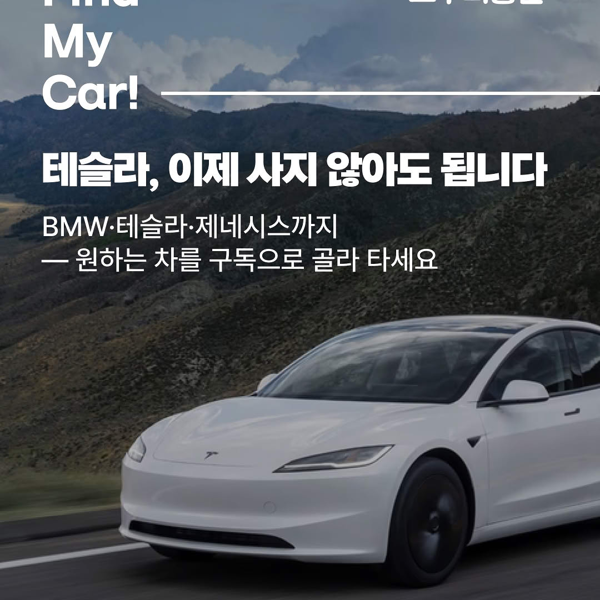

성별 비중
Meta Ads Dashboard
모두의충전 차량구독 광고분석
Facebook과 Instagram 광고 성과를 전체 요약에서 시작해 채널별, 소재별로 내려가며 비교하는 화면입니다.
월별 매체 추적
선택한 월 기준으로 광고비, 클릭, 랜딩조회, 캠페인 효율을 확인합니다. 현재 달은 데이터가 들어온 최신일까지 반영하며, 기준 기간은 아래에 표시됩니다.
현재 월 집행 상태
선택한 월에 실제 비용이 발생했는지 확인합니다.
매체별 타깃 반응
성별은 비중으로, 나이대는 막대로 봅니다. 개인 정보가 아니라 Meta가 제공하는 연령/성별 집계 기준입니다.
나이대 반응
날짜별 광고비 및 효과
날짜별 광고비
FacebookInstagram
날짜별 상세 데이터
일자별로 광고비, 노출, 클릭, 랜딩조회가 어떻게 움직였는지 확인합니다. 필요할 때만 열어서 보면 됩니다.
| 날짜 | 매체 | 광고비 | 노출 | 클릭 | 랜딩조회 |
|---|
상담 신청 추이
상담 신청이 언제 들어왔고 어떤 차량 문의였는지 확인합니다. 막대는 날짜별 신청 건수이고, 아래 표에서 차량 모델과 상담 상태를 봅니다.
유입별 상담 신청
날짜별 상담 신청
상담 차량별 건수
상담 신청 리스트
| 기간 | 유입 | 차량 | 구독 기간 | 상담 상태 | 신호 |
|---|
계약확정 건
`#ev구독신청`의 계약 확정 알림 기준입니다. 개인정보 원문은 저장하지 않고, 차량·금액·유입·출고 상태만 표시합니다.
| 계약일 | 차량 | 구독 기간 | 월 구독료 | 유입 | 출고 |
|---|
매체별 월간 성과 비교
같은 월 안에서 Facebook과 Instagram의 집행 규모와 효율을 비교합니다. 클릭은 광고 반응, 랜딩조회는 실제 페이지 도달에 가까운 지표입니다.
| 매체 | 광고비 | 노출 | 클릭 | 랜딩조회 | CPC | LPV 비용 | 이전 기간 대비 광고비 | 이전 기간 대비 클릭 |
|---|
캠페인별 핵심 사용층 비교
매체 전체 평균이 아니라 캠페인별로 가장 반응이 큰 연령/성별을 보여줍니다. 어떤 캠페인이 누구에게 먹혔는지 비교하기 위한 표입니다.
| 매체 | 캠페인 | 사용층 | 광고비 | 클릭 | 랜딩조회 | CPC | LPV 비용 | 판단 |
|---|
전체 캠페인 성과 순위
성과 순위 표는 광고비 높은순을 기본으로 봅니다. 효율 기준 상위 캠페인은 캠페인명 위에 추천 스티커로 표시합니다.
| 순위 | 매체 | 캠페인명 | 광고비 | 랜딩조회 | CPC | LPV 비용 | 핵심 사용층 | 판단 |
|---|
기간 인사이트
상태 안내
Strategy Report
Meta 광고 상담 감소 진단과 판매 확대 전략
2026년 상담 감소의 핵심 원인은 광고 효율 붕괴가 아니라 광고비 축소와 랜딩 이후 상담 전환 구조 약화입니다. Instagram은 상담 효율이 유지·개선됐고, Facebook은 랜딩은 만들지만 상담 전환이 약합니다.
1. 전체 변화
Meta 전체는 2025 Instagram 랜딩조회 추적 이슈를 제외하고 광고비, 클릭, 상담, 상담당 비용 중심으로 판단합니다.
2025 vs 2026 핵심 지표
광고비와 상담 볼륨은 줄었지만 상담당 비용은 개선됐는지 함께 확인합니다.
상담당 비용 변화
전체 상담당 비용과 Meta 직접 상담당 비용을 분리해서 봅니다.
2. 매체별 퍼널 진단
Instagram은 상담 효율, Facebook은 랜딩 이후 이탈을 중심으로 봅니다. 2025 Instagram 랜딩조회는 원본 API 추적값이 불완전해 퍼널 비교에서 제외합니다.
매체별 Meta 상담당 비용
2026년 기준 Instagram이 상담 확보 채널로 우위입니다.
2026 퍼널 이탈률
Facebook은 랜딩 이후 상담 이탈이 가장 큰 병목입니다.
3. 상담 감소 원인
광고비 감소폭이 Meta 상담 감소폭보다 큽니다. 효율 붕괴보다 도달·클릭 볼륨 감소 영향이 큽니다.
랜딩조회는 만들지만 상담으로 전환되지 않습니다. 신규 상담 예산보다 리타게팅 역할이 적합합니다.
상담 유입값이 앱 또는 미상으로 잡히면 Meta 기여가 과소평가됩니다. UTM과 Slack 유입값 연결이 필요합니다.
4. 차량 수요 변화
판매 확대 전략은 많이 물어본 차량과 2026년에 비중이 상승한 차량을 함께 봐야 합니다.
상담 상위 차량 비교
EQE350+는 유지, E-클래스/i4/MINI/5시리즈는 2026년 반응이 올라왔습니다.
차량별 메시지 방향
- EQE350+프리미엄 전기차, 초기비용 없음, 월 부담 완화
- 모델 3전기차 입문, 유지비 포함, 빠른 상담 전환
- E-클래스수입 세단 구독, 일반 번호판, 심사 부담 완화
- i4/MINI취향형 수입 전기차, 단기 경험, 보험·세금 포함
- 레이 EV실용·업무용, 낮은 월 부담, 즉시 문의
5. 실행 전략
목표는 클릭 증가가 아니라 상담과 판매 가능성을 같이 늘리는 것입니다.
- 예산Instagram 예산을 주 단위 10~20%씩 회복하고 상담당 비용을 감시
- Facebook신규 유입 증액은 보류, 방문자·반응자 리타게팅으로 제한
- 랜딩첫 화면에 월 비용, 초기비용 없음, 보험·세금 포함, 즉시 상담 CTA 배치
- 소재차량별 광고 세트로 분리하고 메시지를 차량 수요에 맞춤
- 추적utm_source, campaign, content, vehicle_model을 Slack 상담 알림까지 전달
- KPIMeta 상담당 비용, 차량별 상담당 비용, 상담→심사→계약 전환율로 판단
최종 판단
2026년 상담 감소는 광고 효율 붕괴보다 광고비 축소와 전환 구조 약화가 큽니다. Instagram은 상담당 비용이 개선됐으므로 예산 회복 대상이고, Facebook은 랜딩 이후 상담 전환이 약하므로 신규 유입 증액은 보류합니다. 판매 확대를 위해서는 차량별 소재, 상담 전환형 랜딩, 유입 추적 정비를 함께 진행해야 합니다.
전체 광고 Summary
Facebook은 광고센터 수동 입력 기준, Instagram은 광고관리자와 광고 화면 수동 입력 기준을 함께 봅니다. 두 채널의 원천이 다르기 때문에 랜딩 페이지 조회와 클릭 비용을 분리해서 해석합니다.
최종 결론과 다음 집행 방향
차량구독은 남성 중심, 릴스 중심으로 반응했다
이번 데이터에서 Facebook과 Instagram 모두 남성 반응이 압도적으로 높고, Instagram 릴스/피드가 주요 노출 지면으로 잡혔습니다. 차량구독 메시지는 “차량 이미지 자체”보다 선납금 없음, 일반 번호판, 유지비 포함처럼 구매 부담을 낮추는 메시지와 결합될 때 랜딩 페이지 조회로 이어졌습니다.
Facebook vs Instagram 효율 비교
집행 비용
랜딩 조회
조회당 비용
Instagram은 Facebook보다 집행 비용이 약 11% 많았지만 랜딩 페이지 조회는 약 37% 많고, 조회당 비용은 약 19% 낮았습니다. 이후 Facebook 광고 원본 CSV를 추가 확보했기 때문에 1월~5월 전체 실효성은 별도 탭에서 채널별 원본 기준으로 다시 비교합니다.
무엇이 효과적이었나
- 가장 낮은 비용IG 소재 1, 101원/클릭
- 가장 큰 Facebook 효율BMW 소재, 245원/랜딩
- 가장 강한 지면Instagram 릴스
- 핵심 타깃남성 18-54세
주의할 점
- 여성 반응대부분 10% 내외
- 벤츠 이미지관심은 높지만 비용 높음
- Facebook 단독 지면볼륨보다 보조 학습 역할
- 평가 기준클릭보다 랜딩 조회
Facebook은 의미 있다. 다만 “단독 성과 채널”보다 학습/확장 채널이다
Facebook 광고센터에서 시작한 소재도 실제 노출은 Instagram 릴스와 피드로 많이 배분됐습니다. 즉 Facebook 광고가 의미 없다는 뜻이 아니라, Meta 알고리즘이 Facebook과 Instagram 전체에서 결과가 나올 지면을 찾아간다는 뜻입니다.
다음 집행은 채널을 완전히 분리하기보다, Meta 전체 자동 게재를 기본으로 두고 소재별 가설을 나눠야 합니다. 예산은 효율 소재에 더 주고, Facebook 지면은 35세 이상 보조 타깃과 리타게팅 검증용으로 보는 편이 좋습니다.
채널별 설정 가설
- Instagram 릴스18-34세 남성, BMW/CTA 이미지, 짧은 영상형으로 확장
- Instagram 피드35-54세 남성, 선납금 없음/일반 번호판/유지비 포함 메시지 강조
- Facebook 릴스/피드35세 이상 남성, 신뢰형 문구와 비용 부담 해소 메시지 테스트
- 여성 타깃현재 소재 그대로 증액하지 말고 안전성/편의성/가족 사용 맥락 별도 제작
다음 액션
- 1단계IG 소재 1 증액 테스트
- 2단계BMW 이미지 릴스형 영상/모션 버전 제작
- 3단계벤츠/CTA 소재는 문구 바꿔 A/B 테스트
- 4단계랜딩 페이지 조회 이후 예약/상담 전환 추적 연결
어떤 자동차를 홍보할까?
- 검증된 1순위BMW 3/5시리즈 계열, 주행 장면
- 다음 테스트 1순위테슬라 Model Y/3, 전기차 구독 후킹
- 보조 비교군벤츠 세단, 프리미엄 관심 유도용
- 보조일반 번호판이 보이는 실제 인도/주차 장면
이미지/영상 가설
- 젊은 남성 타깃BMW 전면 주행컷 + 릴스형 짧은 모션
- 후킹 테스트테슬라 전면/측면 주행컷 + “전기차도 구독” 메시지
- 35-54세 실수요차량 실내, 번호판, 월 부담 메시지 동시 노출
- 여성/가족 타깃안전, 관리 포함, 가족 이동 맥락의 별도 소재 제작
Facebook Summary
페이스북 소재 분석
차는 이제 사는 것 말고 구독하세요
무보증, 일반 번호판, 자동차세/보험/수리비 포함 메시지를 전면에 둔 소재입니다. 페이스북 광고센터 기준으로는 Facebook 광고지만, 실제 노출 상위 지면은 Instagram 릴스와 피드가 크게 잡힙니다.
랜딩 페이지 조회657
조회수27,822
랜딩 페이지 조회당 비용283원
도달19,962
게재 위치 상위
- Instagram 릴스8,690
- Instagram 피드4,868
- Facebook 릴스1,478
- Instagram 스토리714
- Facebook 모바일 앱 피드543
지역 반응 상위
- Gyeonggi-do5,262
- Seoul4,132
- Gyeongsangnam-do1,282
- Busan1,194
- Incheon1,148
연령/성별 반응
캡처 기준 추정치입니다. 성별 색상 범례가 잘려 있어 성별명은 다음 캡처에서 확정합니다.
판단: 볼륨은 충분하고 비용은 중간권입니다. 최고 효율 소재는 아니지만, 유지 또는 보조 증액 후보로 두고 릴스/피드와 수도권 타깃 반응을 더 확인하는 쪽이 좋습니다.
지금 예약하기
동일한 차량구독 메시지를 CTA 중심으로 풀어낸 소재입니다. 클릭 후 랜딩 도달 품질은 나쁘지 않지만, 소재 1보다 랜딩 페이지 조회당 비용이 높고 전체 볼륨이 작습니다.
랜딩 페이지 조회116
조회수6,585
랜딩 페이지 조회당 비용332원
도달4,320
게재 위치 상위
- Facebook 릴스2,523
- Facebook 모바일 앱 피드791
- 모바일 인스트림 동영상123
- Facebook 스토리27
- Facebook 알림24
지역 반응 상위
- Gyeonggi-do887
- Seoul831
- Gyeongsangnam-do338
- Gyeongsangbuk-do278
- Chungcheongnam-do255
연령/성별 반응
캡처 기준 추정치입니다. 소재 2는 55세 이상 반응이 상대적으로 강합니다.
판단: Facebook 지면 중심으로 노출됐고, 랜딩 페이지 조회당 비용이 332원으로 높습니다. 문구나 썸네일 수정 후 재테스트하는 쪽이 좋습니다.
최고 효율 소재
동일한 차량구독 메시지이지만 현재 입력된 페이스북 소재 중 랜딩 페이지 조회 수와 랜딩 페이지 조회당 비용이 가장 좋습니다. 볼륨과 효율을 동시에 확보한 증액 우선 후보입니다.
랜딩 페이지 조회1,562
조회수58,251
랜딩 페이지 조회당 비용245원
도달37,790
게재 위치 상위
- Instagram 릴스23,544
- Instagram 피드12,751
- Facebook 릴스1,787
- 탐색 홈948
- Facebook 모바일 앱 피드875
지역 반응 상위
- Gyeonggi-do11,000
- Seoul6,129
- Gyeongsangnam-do2,668
- Busan2,370
- Incheon2,279
연령/성별 반응
캡처 기준 추정치입니다. 소재 3은 25-54세 전반에서 반응이 넓게 확보된 효율 소재입니다.
판단: 현재 페이스북 소재 중 1순위입니다. 랜딩 페이지 조회당 비용이 245원으로 가장 낮고, 랜딩 페이지 조회 1,562건으로 규모도 가장 큽니다.
중단 후보
동일한 CTA 중심 소재지만 랜딩 페이지 조회 수가 가장 작고 랜딩 페이지 조회당 비용이 가장 높습니다. 현재 데이터 기준으로는 유지보다 중단 또는 큰 폭 수정이 적절합니다.
랜딩 페이지 조회35
조회수2,816
랜딩 페이지 조회당 비용427원
도달2,095
게재 위치 상위
- Facebook 릴스1,196
- Facebook 모바일 앱 피드481
- Facebook 알림101
- 모바일 인스트림 동영상55
- Facebook 스토리45
지역 반응 상위
- Gyeonggi-do478
- Seoul363
- Gyeongsangnam-do181
- Gyeongsangbuk-do134
- Chungcheongnam-do132
연령/성별 반응
캡처 기준 추정치입니다. 55세 이상 반응은 있지만 랜딩 페이지 조회당 비용이 높아 중단 후보 판단은 유지합니다.
판단: 현재 페이스북 소재 중 4순위입니다. 랜딩 페이지 조회당 비용 427원으로 가장 비싸고, 볼륨도 35건이라 중단 후보로 보는 편이 안전합니다.
Instagram Summary
Instagram 소재 분석

IG 소재 1선납금 없이 구독
“선납금 없이 이제는 구독으로 전기차를 타보세요” 메시지를 앞세운 Instagram 홍보 미디어입니다. 기존 CSV에서도 랜딩 페이지 조회당 비용이 가장 낮아 증액 테스트 후보로 잡힌 소재입니다.
링크 클릭864
랜딩 페이지 조회747
링크 클릭당 비용101원
도달12,283
게재 위치 상위
- Instagram 릴스7,712
- Instagram 피드4,937
- Facebook 릴스276
- Facebook 모바일 앱 피드150
- Instagram 스토리120
지역 반응 상위
- Gyeonggi-do3,820
- Seoul1,593
- Gyeongsangnam-do837
- Incheon783
- Busan702
성별/연령 반응
Men 87.4%
Women 12.6%
캡처 기준 추정치입니다. 전체 반응은 남성 87.4%로 매우 높고, 특히 35-54세 남성 반응이 핵심입니다.
판단: 적은 예산에서도 클릭과 랜딩 페이지 조회 효율이 가장 좋아 Instagram 증액 테스트 1순위입니다. 다만 반응이 남성에 강하게 쏠려 있어 35-54세 남성 중심 예산 확대와 여성/젊은층용 변형 소재를 분리 테스트하는 편이 좋습니다.
BMW 공통 이미지
Facebook 최고 효율 소재와 동일한 BMW 주행 이미지를 Instagram에서 홍보한 소재입니다. CSV 기준 중간 규모 캠페인과 매칭되며, 수동 화면 기준 링크 클릭과 랜딩 페이지 조회 모두 안정적으로 확보했습니다.
게시물 참여1,025
링크 클릭994
랜딩 페이지 조회919
게시물 공감20
게재 위치 상위
- Instagram 릴스21,256
- Instagram 피드4,495
- Facebook 릴스773
- Instagram 스토리459
- Facebook 모바일 앱 피드444
지역 반응 상위
- Gyeonggi-do7,695
- Seoul3,817
- Gyeongsangnam-do1,608
- Busan1,526
- Incheon1,487
성별/연령 반응
Men 89.7%
Women 10.3%
캡처 기준 추정치입니다. 전체 반응은 남성 89.7%로 높고, 특히 18-34세 남성 반응이 강합니다.
판단: Facebook에서 효율이 검증된 BMW 이미지가 Instagram에서는 더 젊은 남성층까지 확장되는 모습입니다. Instagram 릴스 비중이 압도적으로 높아, 이 이미지는 릴스형 소재로 재가공해 추가 테스트할 가치가 큽니다.
벤츠 공통 이미지
Facebook 벤츠 소재 1과 동일한 이미지를 Instagram에서 홍보한 소재입니다. 젊은 남성층 반응이 강하지만, BMW 공통 이미지보다 링크 클릭당 비용이 높고 랜딩 페이지 조회 효율은 낮은 편입니다.
링크 클릭926
조회수29,459
링크 클릭당 비용224원
랜딩 페이지 조회824
게재 위치 상위
- Instagram 릴스12,306
- Instagram 피드3,784
- Facebook 릴스1,999
- Facebook 모바일 앱 피드632
- Instagram 스토리484
지역 반응 상위
- Gyeonggi-do4,946
- Seoul3,354
- Busan1,162
- Incheon1,145
- Gyeongsangnam-do1,013
성별/연령 반응
Men 88.9%
Women 11.1%
캡처 기준 추정치입니다. 전체 반응은 남성 88.9%로 높고, 18-34세 남성 반응이 특히 강합니다.
판단: 벤츠 이미지는 Instagram에서 젊은 남성층의 관심을 끄는 힘은 있지만, 클릭당 비용 224원으로 BMW 공통 이미지보다 비쌉니다. 유지하되 증액보다는 문구/썸네일 개선 또는 BMW 소재와의 A/B 테스트 비교군으로 두는 편이 좋습니다.
CTA 공통 이미지
Facebook 소재 2와 동일한 이미지를 Instagram에서 홍보한 소재입니다. 링크 클릭과 랜딩 페이지 조회는 안정적이지만, 남성 25-34세 반응이 강하게 쏠려 있어 타깃 확장에는 추가 변형이 필요합니다.
링크 클릭964
조회수31,120
링크 클릭당 비용215원
랜딩 페이지 조회853
게재 위치 상위
- Instagram 릴스11,514
- Instagram 피드6,011
- Facebook 릴스1,931
- Instagram 스토리692
- Facebook 모바일 앱 피드657
지역 반응 상위
- Gyeonggi-do5,595
- Seoul3,280
- Busan1,161
- Gyeongsangnam-do1,157
- Incheon1,147
성별/연령 반응
Men 90.6%
Women 9.4%
캡처 기준 추정치입니다. 전체 반응은 남성 90.6%로 가장 높고, 18-34세 남성 반응이 핵심입니다.
판단: 클릭당 비용 215원으로 벤츠 공통 이미지보다 조금 낫지만, BMW 공통 이미지보다는 낮은 우선순위입니다. 18-34세 남성 타깃의 보조 소재로 유지하고, CTA 문구와 썸네일을 바꿔 재테스트하는 방향이 좋습니다.
1월~5월 Meta 실효성
분석 기간
2026.01.01 ~ 05.13
광고 CSV + Slack 상담 댓글 기준
전체 광고비
8,016,842원
Instagram + Facebook 합산
직접 상담
28건
instagram/facebook 유입 표기 기준
상담 1건당 비용
286,316원
전체 광고비 / 직접 상담
심사 이상
5건
심사/진행/출고급 직접 유입
출고/계약급
1건
직접 유입 high 신호
최종 결론
상담 확보 효율이 Facebook보다 약 8.4배 좋다
Instagram은 직접 상담 26건, 심사 이상 4건, 출고/계약급 1건이 확인됩니다. 상담 1건당 비용은 187,610원으로 현재 가장 명확한 실효 채널입니다.
상담 1건당187,610원
심사 이상 1건당1,219,463원
출고/계약급1건
운영 판단: Instagram은 유지하고, 선납금 없음/BMW/테슬라 후킹 소재 중심으로 10~20% 증액 테스트합니다.
랜딩은 많지만 상담 연결 비용이 높다
Facebook은 랜딩 조회 6,378건을 만들었지만 직접 상담은 2건입니다. 상담 1건당 비용은 1,569,496원으로 Instagram 대비 효율이 크게 낮습니다.
상담 1건당1,569,496원
심사 이상 1건당3,138,992원
출고/계약급0건
운영 판단: Facebook은 완전 중단보다 저예산 보조, 리타게팅, Meta 학습용으로 제한합니다.
전체 광고 퍼널
광고비8,016,842원
클릭34,508
랜딩 조회9,802
직접 상담28클릭→상담 0.08% / 랜딩→상담 0.29%
심사 이상5상담→심사 이상 17.9% (5/28)
출고/계약급1상담→출고/계약급 3.6% (1/28)
상담 1건당 비용286,316원
심사 이상 1건당 비용1,603,368원
출고/계약급 1건당 비용8,016,842원
직접 상담은 Slack 유입경로가 instagram/facebook으로 남은 건만 계산했습니다. APP/unknown 유입에도 high 신호 4건이 있어 실제 광고 기여는 더 클 수 있습니다.
채널별 퍼널
광고비4,877,850원
클릭24,737
랜딩 조회3,424
직접 상담26클릭→상담 0.11% / 랜딩→상담 0.76%
심사 이상4상담→심사 15.4% (4/26)
출고/계약급1상담→출고/계약급 3.8% (1/26)
상담 1건당187,610원
심사 이상 1건당1,219,463원
출고/계약급 1건당4,877,850원
광고비3,138,992원
클릭9,771
랜딩 조회6,378
직접 상담2클릭→상담 0.02% / 랜딩→상담 0.03%
심사 이상1상담→심사 50.0% (1/2), 모수 작음
출고/계약급0상담→출고/계약급 0% (0/2)
상담 1건당1,569,496원
심사 이상 1건당3,138,992원
출고/계약급 1건당계산 불가
Instagram vs Facebook 비교
| 지표 | 판단 | ||
|---|---|---|---|
| 광고비 | 4,877,850원 | 3,138,992원 | Instagram이 더 많이 집행 |
| 클릭 | 24,737 | 9,771 | Instagram 우세 |
| 랜딩 조회 | 3,424 | 6,378 | Facebook 우세, 단 상담 연결 약함 |
| 직접 상담 | 26 | 2 | Instagram 압도 |
| 심사 이상 | 4 | 1 | Instagram 우세 |
| 출고/계약급 | 1 | 0 | Instagram만 확인 |
| 상담 1건당 비용 | 187,610원 | 1,569,496원 | Instagram 약 8.4배 효율 |
| 심사 이상 1건당 비용 | 1,219,463원 | 3,138,992원 | Instagram 약 2.6배 효율 |
소재/차량 인사이트와 주의사항
다음 집행 방향
- Instagram유지 + 10~20% 증액 테스트
- FacebookBMW 소재만 저예산 보조/리타게팅 운영
- 차량 후킹EQE350+, EQA250, 모델 3, i4 중심
- 평가 기준클릭보다 상담당 비용, 심사 이상당 비용
데이터 해석 주의
- APP/unknown광고 유입 UTM이 유실됐을 가능성
- Facebook 원본실제 광고계정명은 Ev Modu
- Instagram 과거 캠페인inactive 구간 랜딩 조회 누락
- 계약 판정Slack 댓글 자동 분류라 최종 확인 필요